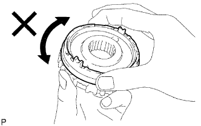
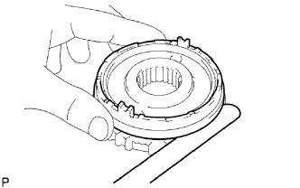
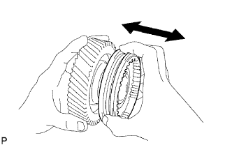
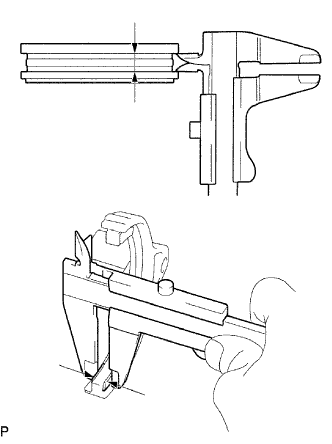
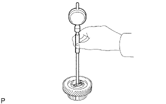
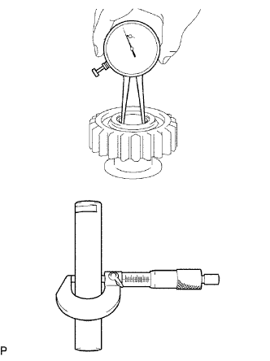
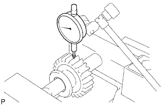

БЛОК МЕХАНИЧЕСКОЙ ТРАНСМИССИИ > ПРОВЕРКА |
| 1. ПРОВЕРЬТЕ БЛОКИРУЮЩЕЕ КОЛЬЦО ВНЕШНЕГО СИНХРОНИЗАТОРА № 3 |
|  |
Нанесите трансмиссионное масло на конус шлицевой части шестерни № 5 и убедитесь, что блокирующее кольцо синхронизатора № 3 не поворачивается ни в одном направлении, прижимая его к шлицевой части шестерни № 5.
|  |
Прижмите наружное блокирующее кольцо синхронизатора № 3 к конусу шлицевой части шестерни № 5. Измерьте зазор между наружным блокирующим кольцом синхронизатора № 3 и шлицевой частью шестерни № 5.
| 2. ПРОВЕРЬТЕ СКОЛЬЗЯЩУЮ МУФТУ ТРАНСМИССИИ № 3 |
|  |
Проверьте взаимное скольжение задающей шестерни 5-й передачи и скользящей муфты трансмиссии № 3.
Проверьте шлицы на скользящей муфте трансмиссии № 3 на износ.
|  |
С помощью штангенциркуля измерьте ширину канавки скользящей муфты трансмиссии № 3 и толщину зубца на вилке переключения передач № 3, а затем рассчитайте зазор.
| 3. ПРОВЕРЬТЕ ЗАДАЮЩУЮ ШЕСТЕРНЮ 5-Й ПЕРЕДАЧИ |
|  |
С помощью нутромера измерьте внутренний диаметр задающей шестерни 5-й передачи.
| 4. ПРОВЕРЬТЕ ПРОМЕЖУТОЧНУЮ ШЕСТЕРНЮ ЗАДНЕГО ХОДА В СБОРЕ |
|  |
Используя индикатор часового типа для отверстий, измерьте внутренний диаметр промежуточной шестерни заднего хода.
Используя микрометр, измерьте диаметр вала промежуточной шестерни заднего хода в месте вращения промежуточной шестерни заднего хода.
| 5. ПРОВЕРЬТЕ РАДИАЛЬНЫЙ ЗАЗОР ПРОМЕЖУТОЧНОЙ ШЕСТЕРНИ ЗАДНЕГО ХОДА |
|  |
Установите промежуточную шестерню заднего хода на вал промежуточной шестерни заднего хода и зажмите его в тисках между алюминиевыми пластинами.
С помощью индикатора часового типа измерьте радиальный зазор.